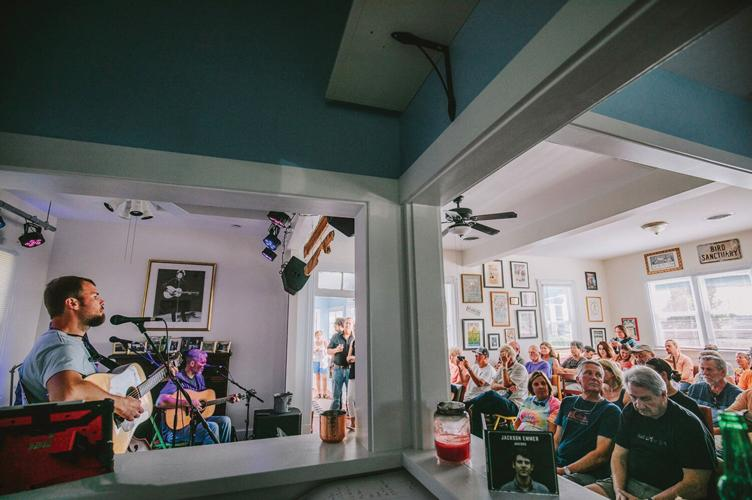
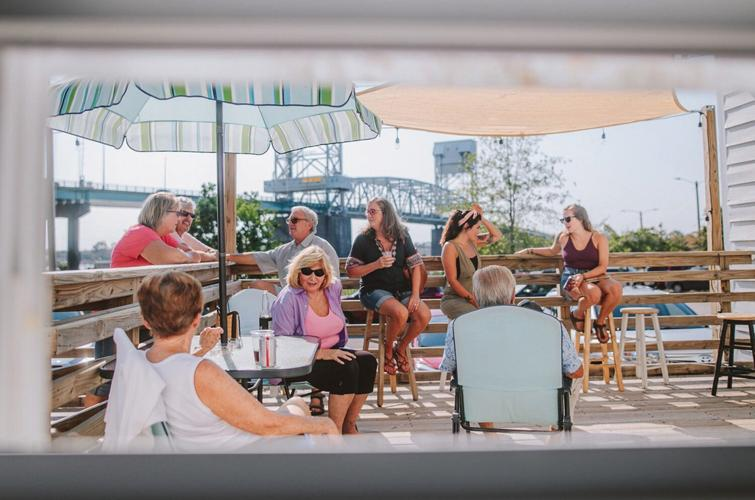

Got Your Ears On?
Live at Ted’s Proves Smaller is Better
By Fritts Causby


Photos courtesy of The Vibrant, Michael Escobar and Wrightsville Beach Magazine.
Anyone with a few gray hairs cropping up will remember how there was a time when cell phones were going smaller, as famously portrayed in the 2001 movie Zoolander. Likewise, anyone who has shopped for a car in the past few years knows that smaller is better, if budget, gas mileage, operating and insurance costs are a concern.
In terms of seeing live music, there is no substitute for the intimacy and connection provided by a small venue. And it’s worth pointing out that catching a band in a small venue before they get famous and appeal to the masses is a badge of honor — the ultimate bragging rights for live music aficionados.
Named for the original owners Ted and Julia Jewell, Live at Ted’s is located in a converted bungalow-style house under the Cape Fear Memorial Bridge at the end of Castle Street. It was taken over in 2019 by Trent and Whitney Harrison, owners of Hourglass Studios.
“Our total capacity is 70, which includes the band as well as me and Trent when we’re working,” said Whitney Harrison. “So at any given time, there are usually about 62 to 64 chairs in the room and, honestly, if you start to put out any more than that, it gets very uncomfortable.”
Live at Ted’s was envisioned as a listening room, where listening to and enjoying the music is the primary focus. The idea was to create a space where music lovers can easily hear the music instead of competing with conversation, such as may be present in a bar or larger venue. Many performers share anecdotes and the stories behind the songs, adding to the experience.
“We kindly ask our patrons to keep conversations to a minimum,” adds Harrison. “This is our nice way of saying that talking during the performance is not appropriate.”
It is a sharp contrast to the experience of attending a show at Greenfield Lake Amphitheater or Live Oak Bank Pavilion. The management of both venues was taken over from the city of Wilmington in 2020 by Live Nation Entertainment, a multinational that was formed in 2010 when Live Nation merged with Ticketmaster.
With the average cost of a ticket ranging between $30 and $95, and the price for an alcoholic beverage starting at $15, many have complained that it feels like price gouging, with the result making the experience of seeing a favorite band out of reach for many and elitist at best.
This is likely a partial explanation for why the Senate Judiciary Committee conducted a hearing in early 2023 discussing whether Live Nation is a monopoly. The company was also the subject of an investigation by the Department of Justice in 2019, based on the allegation it was using retaliatory business practices to ensure concert sites used Ticketmaster to sell tickets.
The allegations were settled but the concerns have remained. Many bands with followings that exceed a certain size have very little option other than a Live Nation venue, however, and the claim is they have no choice but Ticketmaster if they opt to perform at said venue.
Annual revenues for Live Nation, which is based in Beverly Hills, California, were in excess of $16 billion for 2022, representing a more than 166 percent increase over 2021. Regardless of what one may think about the current administration’s crusade against mergers and consolidation, it’s difficult to argue that it does not have a potential benefit for consumers.
This is not to say that major operators do not help local business owners and the community, as many point to the benefits of diversity in terms of generating economic value. It is common to see restaurants, hotels and bars filled to capacity to coincide with a popular event, especially in the downtown area.
Live Nation is providing the city of Wilmington with a $200,000 payment each year to manage Live Oak Bank Pavilion. And in 2015 before the pavilion was built, a study showed the economic impact of local events at around $55 million, supporting the full-time employment of over 2,050 jobs, and generating $5.6 million in local and state tax revenues.
The owners of Live at Ted’s have a niche and do not appear to be interested in competing. “There’s a lot of outdoor music happening in Wilmington and a lot of free music happening throughout the summer,” notes Harrison. “We go pretty regularly throughout the winter. That’s kind of our busy season.”
The cost for an alcoholic beverage at Live at Ted’s averages between $4 and $8; ticket prices usually range between $7 and $20. “The last big show we had with Darrell Scott was $65, but that was what we had to charge to make it happen, and it’s really an amazing opportunity to get to see a legend like him in a small place. He’s known for writing a lot of country songs that other people made famous,” said Harrison.
As the only listening room in Wilmington, Live at Ted’s offers a platform for musicians that may not have been available otherwise. Significantly, the Small Business Administration issued tacit approval of the idea that the venue and others like it that provide a space for the arts have the potential to benefit the communities in which they operate.
The pandemic hit six months after the Harrisons took over the venue. “We whittled our bills down to the minimum that we could get away with just to keep it going,” explained Harrison. “And we were so fortunate to receive one of the Shuttered Venue Operators Grants the government was doing. It was honestly a lifesaver.”
The Shuttered Venue Operators Grant was created to protect small independent venues, promoters, theaters and entertainment venues from bankruptcy. The SBA operates the $16 billion program, which was passed into law during the pandemic.
Live at Ted’s is a mom-and-pop-style business, as Whitney Harrison is the booking manager, the cleaner and main bartender. Her husband Trent is a sound engineer and recording engineer, so he runs the sound during the shows and takes care of all the technical aspects. Whitney’s brother Alex Lanier, a longtime Wilmington musician, fills in for Trent in the event he is not available.
The venue is paying the grant forward by adding to the complexity of the music scene in the local community and by providing a place for musicians to refine their craft. Harrison added that “many of the traveling musicians are full-time, doing it pretty much all year. Some of the local folks that play here might have day jobs or other side hustles. Even some of the touring artists have side hustles, just to kind of help make ends meet.”
It is not uncommon for touring musicians to ask permission to park the Sprinter vans they travel and live in to use the parking lot overnight. “We’re always like, ‘Yeah, absolutely.’ I think it’s really cool how they make it happen and make it work for them,” said Harrison.
The transition into owning a music venue was a natural progression for the Harrisons, as Whitney was a chorus teacher at New Hanover High School for four years and studied music in college. Trent Harrison completed the recording and engineering program at Guilford Technical Community College prior to graduating from the UNCW Cameron School of Business with a degree in Entrepreneurship.
“I loved teaching. But Trent needed help with the studio and it seemed like the right move. We had been doing more production-type work. And then Ted’s happened in that period, too. So it was like everything kind of fell into place. It’s funny, I thought I would be a teacher for 30 years,” laughed Harrison.
Tickets are available through the Live at Ted’s website. Many performances sell out and the events calendar occasionally looks empty, which is most often a result of the Harrisons and/or Alex Lanier not being available to run operations.
“Usually, one of us is always there. And if we can’t be there then we just kind of choose not to be open. This is just because it’s very special to us,” concluded Harrison. “It’s very close to our hearts, so we feel really connected to providing this experience for everyone.”
Originally published in Wrightsville Beach Magazine.